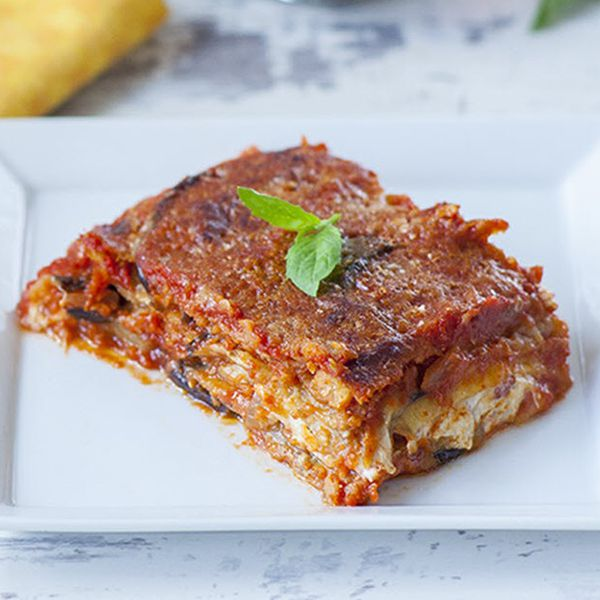

Parmigiana

Description
Eggplant parmigiana is one of the most popular and iconic vegetarian Italian dishes and this recipe is straight from Italy.
Ingredients
These are the ingredients for two people:
- 6 pounds large eggplants, sliced lengthwise into ¼-inch slices
- 4 tablespoons coarse salt, or as needed
- 10 cups vegetable oil for frying
- 4 tablespoons flour for dredging
Steps
- Place a single layer of eggplant slices in a colander sitting on a plate and sprinkle with coarse salt.
Cover with a second layer and sprinkle with salt. Repeat with remaining eggplant.
Place a plate on top and add a weight to put pressure on the eggplant slices. Let stand at room temperature for about 1 hour.
- Rinse eggplant slices under running cold water to wash off all the salt. Pat dry on all sides with paper towels.
- Heat oil in a deep skillet over medium-high heat. Dredge eggplant slices in flour on both sides and add to the hot oil, working in batches.
Deep fry eggplant until golden, 2 to 3 minutes per side. Drain on paper towels.
- Heat olive oil in a large pot over medium heat; cook garlic and onion until soft and translucent, about 5 minutes.
Add tomato puree, 4 basil leaves, and salt. Cook, stirring often, until sauce starts to thicken, about 20 minutes.
Remove sauce from heat. Discard garlic and stir in remaining 4 leaves basil.
- Preheat oven to 350 degrees F (175 degrees C).
- Etc...